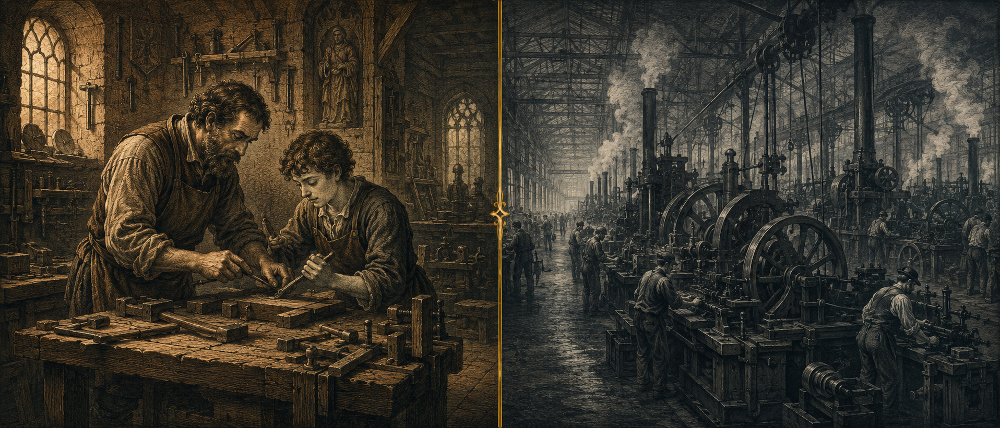
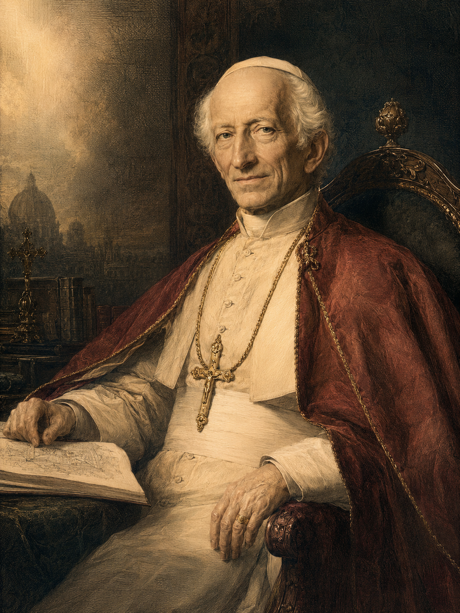

第二次工業革命進入高潮。電力、化學、鋼鐵、鐵路重塑歐美各國的面貌。但與此同時，工人階級的悲慘處境、社會主義革命的浪潮、和傳統社會結構的崩解，使整個西方陷入深刻的危機。

蒸汽機與紡織機讓中世紀的小作坊與工匠行會徹底崩塌。工人從擁有自己工具與技藝的「匠人」，淪為依附於工廠主的「無產者」。城市迅速膨脹，貧民窟、童工、女工剝削、職業傷害無從補償，成為工業城市的日常風景。
1891年，倫敦、巴黎、柏林、紐約都已是百萬人口級的工業大都會。但在這些光鮮的城市背後，是大量赤貧的勞動家庭——而他們的處境，在當時並無任何法律保護。
1848年馬克思與恩格斯發表《共產黨宣言》，1864年第一國際成立，1871年巴黎公社震動歐洲，1889年第二國際在巴黎成立。社會主義從思想實驗變成國際運動，工人罷工、街頭衝突、革命的火苗在歐洲各地閃現。
另一邊，自由放任的資本主義也走到了極端——美國的「鍍金時代」、英國的「黑色國家」、德國俾斯麥的「文化鬥爭」中的反教權立法，都讓教會感到被擠壓在兩個極端之間。教宗良十三世，正是在這個夾縫中發言。
他被稱為「工人教宗」(Pope of the Workers)。在他81歲時頒布的這份通諭，奠定了天主教社會訓導的基石，也讓教會在現代世界中重新找到自己的聲音。

《新事》通諭並未在1891年結束。它開啟了一條延續135年、由歷任教宗共同編織的社會訓導長河。下列每一份文件，都以不同方式回應同一個根本問題——人在現代社會中如何活得有尊嚴？
《新事》通諭並非只是一份神學文件——它在二十世紀以極具體的方式改變了世界。以下是它催生或加速的幾項變革：
從比利時、德國、意大利到拉丁美洲，數以千計的公教工人團體在通諭啟發下成立，深刻影響了二十世紀勞工史。
戰後的德國、意大利、法國、奧地利等國的基督教民主黨，其社會經濟政策的根基都可追溯至《新事》通諭。
八小時工時、最低工資、童工禁令、主日休息、職業傷害補償——這些今日視為理所當然的權利，背後都有通諭的精神推動。
1919年成立的國際勞工組織(ILO)的核心原則，與《新事》通諭的勞動觀高度共振。
戰後德國的Ordoliberalism經濟模式，明確以《新事》通諭與《四十周年》為思想根基，影響整個歐洲社會福利國家。
1960-80年代拉丁美洲的解放神學，雖在某些點上與羅馬有張力，但其關懷貧者的根源仍可追溯至《新事》通諭。
時代誠然在互相交替，但是這一個世紀的事件，往往會非常出奇的跟另一個世紀相像；因為這些事件都是由天主的權力在指導著，而天主之統治歷史行程又是跟他在創造人物時的意志相合的。 §43 公教工會力量